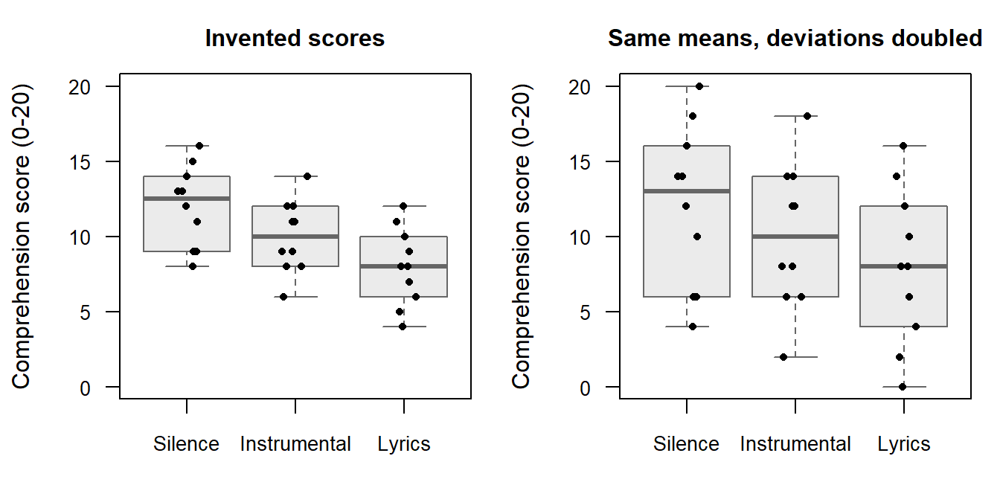
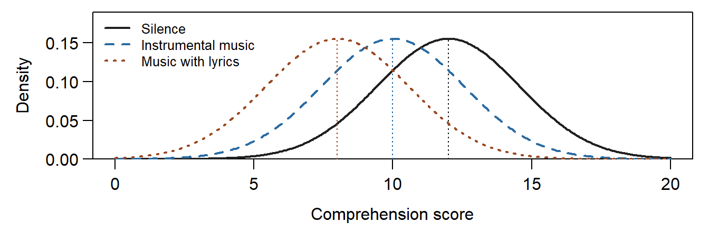
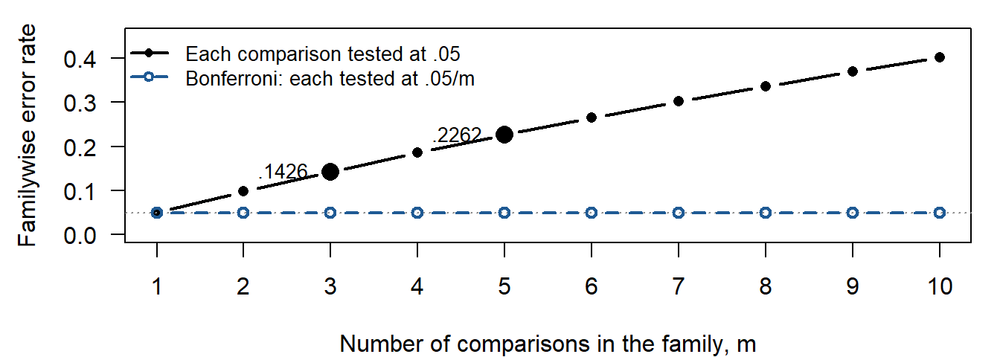
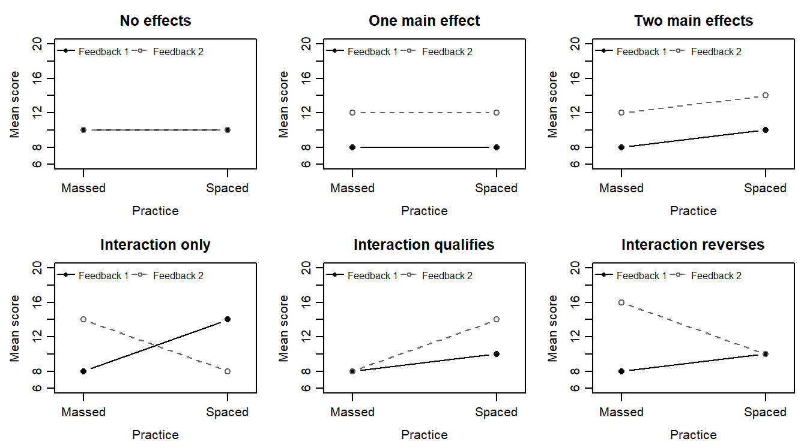
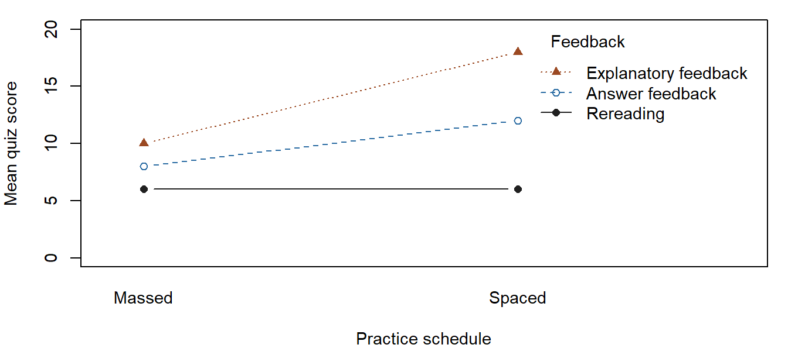
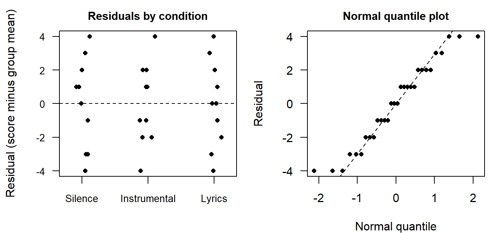

Group Comparisons with Analysis of Variance
NoteChapter overview
This chapter compares means by examining variation. Two invented studies provide the observations: a one-way experiment on background sound while studying carries the first analyses, and a two-factor experiment crossing feedback with practice schedule carries the factorial analysis, which asks how a comparison changes across practice schedules. We follow the one-way ANOVA from individual scores to its F distribution, distinguish its omnibus question from a particular contrast, and explain how the comparison family determines an interval’s coverage. Cell means and simple effects then reveal what main effects can conceal. A worked three-way table, set beside the two-way table of the same study, shows how a third factor adds rows and how a two-way pattern can itself change, and what a fourth factor would add. By the end, you will be able to read an ANOVA table and the F distribution behind it, interpret a contrast and its uncertainty within a family of comparisons, and connect a factorial pattern to the design and model conditions that support its interpretation.
Two invented studies supply the observations. In the first, thirty first-year university students each read the same passage for 20 minutes and then answer a 20-item reading-comprehension quiz. Each student reads in an individual session and is randomly assigned to one of three background-sound conditions, ten to each: Silence, Instrumental music, or Music with lyrics playing during the reading. In the second, twenty-four students study the same fractions material under one of three kinds of feedback and one of two practice schedules, four different students in each combination, and take a common 20-item quiz one week after their final practice. These design details and all scores are invented for teaching.
Our first question concerns the background-sound study: how do the three sound-condition means compare? Chapter 3 built, step by step, the tools for one comparison: an estimate and its standard error, a confidence interval, a hypothesis test with its p-value, and the t tests for one sample, paired samples and two independent samples. For two independent groups sharing one spread, the equal-variance t test pooled the two group variances. We extend that reasoning to several groups, keeping the difference between an overall pattern and particular comparisons visible.
Our later question concerns the feedback-by-practice study: how does the feedback comparison depend on practice schedule? Section 4 answers it, and Section 4.7 adds a third factor, the timing of the quiz.
Comparison Questions and Designs
Outcomes, factors and levels
Both outcomes count correct answers. A comprehension score is the number of reading-comprehension items answered correctly, and a quiz score is the number of fractions items answered correctly; each runs from 0 to 20, and higher values mean more correct answers. A four-point difference therefore means four more correct answers on average; it does not by itself describe every aspect of reading comprehension or of learning fractions.
A factor in analysis of variance is a categorical variable defining groups or conditions. Its categories are levels. Background sound is one factor with three levels, so its analysis is one-way. The second study crosses two factors, feedback with three levels and practice schedule with two, so its analysis is two-way (Section 4). One-way and two-way refer to the number of factors, not to the number of levels: a one-way analysis can compare three, four or more groups, and a third or fourth crossed factor gives a three-way or four-way layout (Section 4.7). This use of factor differs from a latent factor used to represent shared indicator variation in a measurement model.
| Sound condition | Comprehension scores of ten different students |
|---|---|
| Silence | 8, 9, 9, 11, 12, 13, 13, 14, 15, 16 |
| Instrumental music | 6, 8, 8, 9, 9, 11, 11, 12, 12, 14 |
| Music with lyrics | 4, 5, 6, 7, 8, 8, 9, 10, 11, 12 |
Each score in Table 1 belongs to a different student: the ten scores of one sound condition describe ten different students, not repeated measurements, and the student is both the stipulated assignment unit and the measurement unit. The scores are fixed teaching values. They place the three group means two points apart with similar, unequal spreads, so every calculation reproduces by hand, but they do not establish a Normal model, equal variances or a real effect of background sound. The complete course data file, background_sound.csv, holds the same table in one row per student, with columns student, sound and score; students S01–S30 appear ten to each condition in the order Silence, Instrumental music, Music with lyrics, and Silence is the reference condition for the comparisons of Section 3.
Design determines the relevant comparison
Random allocation is stipulated in each invented story. If implemented in a real study, it could support a causal comparison among the participating students, subject to adherence, relevant interference and missing outcomes. It would not make the participants a random sample of all students, and the data table alone establishes neither the implementation of assignment nor representativeness.
Different designs can produce superficially similar tables. If students who heard one sound condition read together in one room, they would share that session’s influences, such as noise from a corridor or a disruption partway through the reading. If whole classes received conditions, students within a class would share influences and the class could be the assignment unit. If each student were measured twice, the two outcomes would form a pair. For a real study, identify the allocation, any repeated measurements, shared sessions or classroom clustering, and any losses before choosing the error term: an uncertainty formula must reflect these connections rather than treat every row as an independent assignment.
One-Way ANOVA
Grouped observations and the idea of ANOVA
The three sound conditions have means 12, 10 and 8 comprehension points (Table 2). Each has ten scores, and the sample SDs, 2.7080, 2.4037 and 2.5820, are similar. The ranges overlap widely: some students who read with lyrics playing, scoring 11 or 12, outscored some who read in silence, scoring 8 or 9. A difference between means summarizes group distributions; it does not say that every student in one group outperformed every student in another.
| Sound condition | n | Mean | SD | Range |
|---|---|---|---|---|
| Silence | 10 | 12 | 2.7080 | 8–16 |
| Instrumental music | 10 | 10 | 2.4037 | 6–14 |
| Music with lyrics | 10 | 8 | 2.5820 | 4–12 |
Why not compare the conditions two at a time? Three conditions give three pairwise differences, and a t test of each at the .05 level asks three questions. If all three model means were equal, the chance that at least one of the three tests rejects wrongly would be about .12, more than twice the .05 that each test states. The three tests are not independent, because each group mean enters two of them; three independent tests would give \(1-.95^3=.1426\). Chapter 3, Section 7.3, noted that several tests raise the chance of at least one false rejection. Analysis of variance therefore asks the overall question first, in one test at .05: do the three means differ at all? Particular comparisons follow, declared in advance or calibrated as a family (Section 3.3).
How can one test compare three means at once? Figure 1 draws the thirty scores in its left panel: each box shows a group’s median and middle half, and the points keep every student visible, which a bar chart of the three means would hide. The right panel is a constructed version with every score’s distance from its group mean doubled, so the group means and counts stay fixed while the spread doubles. The same two-point steps between the means stand out against the narrow spread on the left and are lost in the wide spread on the right. That is the idea of analysis of variance: it judges how far apart the group means lie relative to how widely scores vary within the groups (Çetinkaya-Rundel & Hardin, 2024; Kutner et al., 2005). Section 2.3 turns this comparison into the F statistic and returns to the right panel with numbers.
The group-mean model and the partition of variation
Write \(Y_{ij}\) for the random score of student \(i\) in sound condition \(j\). Here \(j\) indexes a group, rather than a data-file column. The one-way model is
\[ Y_{ij}=\mu_j+\varepsilon_{ij}. \]
The unknown \(\mu_j\) is the group mean in the model, and \(\varepsilon_{ij}\) is that student’s unknown departure from it. After fitting the group means, the fitted value is \(\widehat y_{ij}=\bar y_j\), and the residual is \(e_{ij}=y_{ij}-\bar y_j\). A residual is calculated from observed scores and fitted means; a model error is a departure from an unknown model mean. This distinction will recur in regression.
The comparison concerns two explanations of the same thirty scores. A one-mean model, \(Y_{ij}=\mu+\varepsilon_{ij}\), gives every sound condition the same mean. The group-mean model lets each condition have its own mean, \(Y_{ij}=\mu_j+\varepsilon_{ij}\). Both allow students to differ around their model mean. The second model can reproduce the first by setting its three means equal. Fitting separate means can therefore reduce the residual variation even when the population means are equal; a smaller residual sum of squares alone cannot settle the comparison. Section 2.3 judges that improvement relative to the remaining within-group variation and the two extra mean parameters.
The observed grand mean is \(\bar y=10\), the average of the three group means because the groups are equally sized. Every score’s distance from the grand mean splits into two parts, the group’s departure from the grand mean and the student’s residual:
\[ y_{ij}-\bar y=(\bar y_j-\bar y)+(y_{ij}-\bar y_j). \]
For the Music-with-lyrics student who scored 4, \(4-10=(8-10)+(4-8)\): the group mean lies two points below the grand mean, and this student another four points below the group mean. The first part is shared by every student in the group; the second differs from student to student.
Squaring the parts and adding over all thirty students turns the split into a partition of the total squared variation, \(SS_T=SS_B+SS_W\), where
\[ \begin{aligned} SS_T&=\sum_{j=1}^J\sum_{i=1}^{n_j}(y_{ij}-\bar y)^2,\\ SS_B&=\sum_{j=1}^Jn_j(\bar y_j-\bar y)^2,\\ SS_W&=\sum_{j=1}^J\sum_{i=1}^{n_j}(y_{ij}-\bar y_j)^2. \end{aligned} \]
The total sum of squares \(SS_T\) measures variation around the one grand mean. The between-group sum of squares \(SS_B\) counts each group’s departure once for every student in that group, so it grows as the group means separate. The within-group sum of squares \(SS_W\) adds the squared residuals around the group means. The partition holds because, within each group, the cross-products \(2(\bar y_j-\bar y)(y_{ij}-\bar y_j)\) sum to zero: the group’s departure is the same for every student, and the residuals of a group sum to zero. For the background-sound study, \(SS_B=80\), \(SS_W=178\) and \(SS_T=258\), in squared comprehension points. The Instrumental-music group adds nothing to \(SS_B\), because its mean equals the grand mean, although its scores still vary. The partition is arithmetic; it needs no Normality or independence assumption. Those conditions enter when the partition is used for inference, in Section 2.3.
Degrees of freedom, mean squares and the F test
The F statistic puts the idea of Figure 1 into one number, the variation among the group means divided by the variation within the groups, each measured as an average squared departure. A sum of squares grows with both the size of the departures and the number of them, so each is divided by its degrees of freedom (df), the number of departures that can vary freely, before the two sources are compared. The F statistic has two kinds of df.
- The between-groups df, \(J-1=2\), are the numerator df. The three group means can take any values, but once the grand mean is fixed their departures from it, weighted by group size, sum to zero, so only two of them are free.
- The within-groups df, \(N-J=27\), are the denominator df. The ten residuals of each group sum to zero, so nine of them are free in each group, and three groups give 27.
The two kinds add to the total df, \(N-1=29\), because the thirty departures from the grand mean sum to zero. Dividing each sum of squares by its df gives a mean square,
\[ MS_B=\frac{SS_B}{J-1},\qquad MS_W=\frac{SS_W}{N-J},\qquad F=\frac{MS_B}{MS_W}. \]
The within-group mean square is the pooled variance of Chapter 3, Section 2.2, extended from two groups to \(J\): each group’s sample variance \(s_j^2\) is weighted by its own df,
\[ MS_W=\frac{\sum_{j=1}^J(n_j-1)s_j^2}{\sum_{j=1}^J(n_j-1)}. \]
With equal group sizes it is the plain average of the group variances, here 7.3333, 5.7778 and 6.6667. Table 3 gathers the parts.
| Source | SS | df | What the df count | MS | F | p |
|---|---|---|---|---|---|---|
| Sound condition | 80 | 2 | Group means free to vary, \(J-1\) | 40.0000 | 6.0674 | .0067 |
| Within groups | 178 | 27 | Residuals free to vary after fitting three means, \(N-J\) | 6.5926 | ||
| Total | 258 | 29 | Departures from the grand mean free to vary, \(N-1\) |
Read the table as one sentence about the observations, \(\text{Data}=\text{fit}+\text{residual}\). The sound-condition row is the fit, what the three group means account for; the within-groups row is the residual, what is left around them; and the total row is the data, measured around the grand mean. The sums of squares add across the rows, \(80+178=258\), and so do the df, \(2+27=29\), which makes a quick check of any printed table. \(MS_W=6.5926\) estimates the common error variance of the model; it is smaller than the total sample variance, \(258/29=8.8966\), because it leaves out the separation of the means. Statistical software fits the same model from the thirty records and often prints a longer layout, with rows such as an intercept and an uncorrected total that serve the fitting rather than the comparison question; the Computer Lab reads one such layout row by row.
| Fitted mean model | Fitted values | Residual SS | Residual df |
|---|---|---|---|
| One common mean | 10 for every student | 258 | 29 |
| Three group means | 12, 10 and 8 for the respective conditions | 178 | 27 |
Allowing the means to differ removes 80 squared score points from the residual variation, the between-group SS in the ANOVA table, while using two more mean parameters. Its mean square is 40, compared with 6.5926 left within groups, giving the same F of 6.0674. Thus the between/within reading and the model-comparison reading explain one test. The reference distribution asks how large this improvement could be when one common mean and the stated error conditions hold. It does not ask whether adding parameters improves the observed fit at all.
Write \(\mu_S\), \(\mu_I\) and \(\mu_L\) for the model means of Silence, Instrumental music and Music with lyrics. The omnibus null hypothesis is \(H_0:\mu_S=\mu_I=\mu_L\); the alternative says that at least two of these means differ. Judging whether 6.0674 is large needs the distribution that the statistic would follow if the null were true.
Three conditions support this reference distribution; Figure 2 draws the last two. Independent observations: one student’s departure from a group mean carries no information about another student’s departure. Here that rests on the design (Section 1.2), with students individually assigned, each reading in an individual session and scored once; no display of the scores can establish it. Approximately Normal errors: the departures around each group mean, not the pooled mixture of all thirty scores, have a roughly Normal shape. A common variance: one error variance \(\sigma^2\) describes every group, which is what allows \(MS_W\) to pool the three group variances. In model shorthand, the errors \(\varepsilon_{ij}\) are independent Normal with mean zero and common variance \(\sigma^2\).

Under the null, both mean squares estimate the same error variance, so their ratio tends to lie near 1; the numerator also grows with the separation of the model means, so a large ratio is evidence against equality. Under the three conditions and the null, F follows an F distribution, one of a family of right-skewed distributions on positive values, each indexed by its two df, numerator first: here \(F(2,27)\). The left panel of Figure 3 shows three members of the family and marks each one’s 5% point, the value beyond which 5% of the distribution lies. With few denominator df, as in \(F(2,8)\), the error variance is poorly estimated and large ratios occur more often by chance: its curve looks much like that of \(F(2,27)\), but its heavier tail moves the 5% point from 3.3541 to 4.4590. With more numerator df, as in \(F(5,27)\), the distribution gathers near 1 and its 5% point falls to 2.5719.
![Left panel, titled F distributions and 5% points: three right-skewed density curves over F values from 0 to 6. F(2, 27) and F(2, 8) both start near 1 at zero and decline almost together, F(2, 8) with a slightly heavier right tail; F(5, 27) rises from zero to a peak of about 0.73 near 0.6 and then declines. A labelled vertical mark in each curve's colour and line type stands at its 5% point: 2.5719 for F(5, 27), 3.3541 for F(2, 27) and 4.4590 for F(2, 8), so the heavier tail of F(2, 8) shows as a mark further to the right. Right panel: the F(2, 27) density from 2 to 9 on a vertical scale enlarged to 0.10. A dotted line marks the critical value 3.3541 and the area to its right is shaded light grey; a dashed line marks the observed F = 6.0674, and the dark area to its right is labelled p = .0067.](chapter_04_files/figure-html/fig-ch04-f-reference-1.png)
The dark area in the right panel of Figure 3, .0067, is read in the same way as the tail areas and p-values of Chapter 3, Section 4. Only the right tail counts, because greater separation of the means produces a larger ratio. Under the null and the model conditions, a ratio at least as large as 6.0674 occurs with that probability. The observed F lies beyond the critical value 3.3541, so at a prespecified .05 significance level the equality null is rejected; comparing F with the critical value and comparing p with .05 give the same decision. This is evidence about the three-mean pattern, not a probability that the null is true and not an identification of which particular comparisons differ.
The box below states, in the four lines used since Chapter 3, what this F test addresses, what it rests on, what the data can check and what the result supports.
TipJustifying the analysis
- Target: whether the model means of the three sound conditions, \(\mu_S\), \(\mu_I\) and \(\mu_L\), are all equal for the thirty students of the background-sound study, on the 0–20 comprehension scale; the observed means 12, 10 and 8 estimate them.
- Conditions:
- Secured by design: individual random assignment, ten students to each condition, and one score per student from an individual session, so the scores are independent and a difference among the means reads as an effect of sound among these students, not in a wider population (Sections 1.2 and 2.3).
- Model assumptions: Normal errors with one common variance (Section 2.3), estimated by \(MS_W=6.5926\) on 27 df.
- Choices and defaults: all thirty students, none missing; a .05 level fixed in advance; the right tail of \(F(2,27)\); the classical calibration that pools the group variances.
- Check: the group SDs, 2.7080, 2.4037 and 2.5820, are similar, the largest 1.1266 times the smallest, with ten students in each group, and the boxplots show no outlying score; markedly unequal SDs would call for Welch’s one-way ANOVA, chosen in advance (Section 5.2). Ten scores per group say little about shape, and independence rests on the design.
- Bound: \(F(2,27)=6.0674\), \(p=.0067\) is evidence at the .05 level against equal means for these thirty students under the model. It does not say which means differ or by how much (Section 3), and, with invented scores, says nothing about real studying.
With equal group sizes \(n\), the numerator of F shows directly what the statistic compares:
\[ F=\frac{n\sum_{j=1}^J(\bar y_j-\bar y)^2/(J-1)}{MS_W}. \]
Three quantities move it, the same three that moved Chapter 3’s t statistic (Section 4.4): the separation of the group means, the group size \(n\) and the within-group spread in \(MS_W\). Table 5 changes one of them at a time; its second row is the right panel of Figure 1.
| Version of the study | \(n\) | Group means | \(MS_B\) | \(MS_W\) | F | p |
|---|---|---|---|---|---|---|
| The thirty invented scores | 10 | 12, 10, 8 | 40 | 6.5926 | 6.0674 | .0067 |
| Spread doubled | 10 | 12, 10, 8 | 40 | 26.3704 | 1.5169 | .2375 |
| Separation halved | 10 | 11, 10, 9 | 10 | 6.5926 | 1.5169 | .2375 |
| Group size doubled | 20 | 12, 10, 8 | 80 | 6.5926 | 12.1348 | <.0001 |
Doubling every distance from the group mean doubles each group’s SD and multiplies \(MS_W\) by four; halving every mean’s distance from the grand mean divides \(MS_B\) by four. Each change alone quarters F, from 6.0674 to 1.5169, and moves p from .0067 to .2375: F reads separation relative to spread, never either alone. Doubling the group size with the same means and SDs leaves every boxplot looking the same, yet doubles \(MS_B\) and so F: more students supply more information about the same pattern. Section 2.4 shows that eta squared barely responds to that third change.
Two groups, direction and magnitude
With two groups, \(MS_W\) is Chapter 3’s pooled variance \(s_p^2\), so the classical one-way F test and Chapter 3’s equal-variance two-sample t test (Section 5.3) share one model, one pooled variance and one residual df, and \(F(1,N-2)=t_{N-2}^2\). Chapter 3 labels its two groups 1 and 0; this chapter numbers groups \(j=1,\ldots,J\), so its two-group case uses 1 and 2.
For Silence and Music with lyrics alone, the pooled variance is 7 on 18 df, and \(t(18)=3.3806\) and \(F(1,18)=11.4286=3.3806^2\) have the same two-sided \(p=.0033\). Squaring removes direction, so the signed difference, Silence minus Music with lyrics, 4 points, carries it. This matched fit reads with the Justifying the analysis box that Chapter 3 gave the equal-variance t test; only the target changes, to the Silence-minus-Music-with-lyrics difference for these twenty students, whose SDs, 2.708 and 2.582, are similar. The two-group refit pools 7.0000 on 18 df rather than the three-group \(MS_W=6.5926\) on 27, because it leaves out the Instrumental group, and it answers a narrower question than the three-group F: one pairwise comparison rather than the whole pattern. Appendix A derives the identity, and Section 5.2 returns to groups whose spreads may differ.
Magnitude begins on the comprehension scale. The observed Instrumental-music-minus-Silence difference is \(-2\) points and the Music-with-lyrics-minus-Silence difference is \(-4\): two and four fewer items answered correctly, on average, than in silence. Whether a difference of this size matters for studying needs a substantive criterion, not only a p-value. One descriptive summary of the overall separation is eta squared,
\[ \eta^2=\frac{SS_B}{SS_T}=\frac{80}{258}=.3101: \]
group means account for .3101 of the observed squared variation in these thirty records. It is the fit’s share of the table’s total, the quantity that later chapters call the \(R^2\) of a fitted model. This is a fraction of a sample decomposition, not the proportion of comprehension caused by background sound. Eta squared and F answer different questions: in the last row of Table 5, twenty students per group double F while eta squared barely moves, from .3101 to .2986, because the means account for about the same share of the variation while the larger study gives stronger evidence that they differ. A small p-value therefore does not signal a large difference. Because sample means differ even when model means are equal, eta squared slightly overstates the share in the model; omega squared adjusts for that and gives .2525 here (Appendix B). A standardized mean difference, explained in Chapter 3, Section 7.1, divides a difference by a stated SD; dividing it by an individual-score SD gives a different quantity from dividing it by the SE of that difference.
Contrasts and Multiple Comparisons
Contrasts and their weights
The omnibus question asks whether all three model means agree. A contrast states a particular comparison as a weighted combination of means whose weights sum to zero:
\[ C=\sum_{j=1}^Jc_j\mu_j,\qquad \sum_{j=1}^Jc_j=0, \qquad \widehat C=\sum_{j=1}^Jc_j\bar y_j. \]
The symbol \(C\) here names a contrast, and \(\widehat C\) its estimate. The weights specify both the comparison and its direction.
The study plan declares two questions, each music condition against Silence: Instrumental music minus Silence and Music with lyrics minus Silence. A negative estimate means fewer items answered correctly than in silence. A broader question compares the equal average of the two music conditions with Silence. In the declared order Silence, Instrumental music, Music with lyrics, the three comparisons have these weights:
| Comparison | Weights | Estimate |
|---|---|---|
| Instrumental music minus Silence | \((-1,1,0)\) | \(-2\) |
| Music with lyrics minus Silence | \((-1,0,1)\) | \(-4\) |
| Equal average of the two music conditions minus Silence | \((-1,1/2,1/2)\) | \(-3\) |
Only the first two form the declared family whose intervals Section 3.3 calibrates together. The third gives the two music conditions equal weight; its \(-3\) hides that they fall 2 and 4 points below Silence, so it does not replace both separate comparisons when both are required. The weights also fix the scale: weights such as \((-2,1,1)\) double the estimate and its SE and report twice a mean difference, whereas \((-1,1/2,1/2)\) keeps the estimate in comprehension points. With unequal group sizes, equal weights and weights proportional to student counts answer different questions (Appendix B.1).
The standard error of a contrast
The SE of a contrast extends the two-group SE of Chapter 3, Section 2.2. A difference between two means is the contrast with weights \(+1\) and \(-1\), and Chapter 3’s pooled SE can be written with those weights visible:
\[ s_p\sqrt{\frac{1}{n_1}+\frac{1}{n_0}} =\sqrt{s_p^2\left(\frac{1^2}{n_1}+\frac{(-1)^2}{n_0}\right)}. \]
Under the independent common-variance model, each estimated group mean has variance \(\sigma^2/n_j\), and the variance of a weighted sum of independent means uses the squared weights. Opposite signs define a difference; they do not make independent sources of uncertainty cancel. Several groups make two changes to Chapter 3’s form: the weights \(c_j\) can describe any comparison, and \(s_p^2\) is replaced by \(MS_W\), the variance pooled over all \(J\) groups (Section 2.3). Then
\[ \widehat{SE}(\widehat C)= \sqrt{MS_W\sum_{j=1}^J\frac{c_j^2}{n_j}}. \]
For each difference with Silence,
\[ \widehat{SE}= \sqrt{\frac{178}{27}\left(\frac{1}{10}+\frac{1}{10}\right)} =1.1483\text{ points}. \]
Each contrast uses the three-group estimate 6.5926 and its 27 error df, although it uses only two of the three means: under the common-variance model all three groups estimate the same \(\sigma^2\), so pooling them uses more information than the two-group refit of Section 2.4, whose 7.0000 on 18 df gives an SE of 1.1832. For the equal-average contrast, the squared weights \(1\), \(1/4\) and \(1/4\) give \(\widehat{SE}=0.9944\). This smaller SE belongs to a different estimand, an average of two means compared with the reference; it does not make either separate comparison more precise. The NIST contrast explanation develops the same weighted-mean variance calculation.
Families of comparisons and the familywise error rate
Section 2.1 showed that several tests of one study raise the chance of at least one false rejection, so a reader needs to know how many comparisons were made and when each was chosen. A planned comparison is declared before the results are seen, as this study’s plan declares each music condition against Silence. A post hoc comparison is chosen after the results are seen, often because it looks large, such as the largest of the three pairwise differences. Chapter 3, Section 7.3, showed that a result chosen because it looks large tends to overstate its target; the same selection problem arises among the several comparisons of one study.
Each comparison tested at level .05 has a per-comparison error rate, also called the testwise rate, of .05: when its null hypothesis is true, it rejects wrongly with probability .05. A reader of the whole report, however, cares whether any of its comparisons is a false rejection. The familywise error rate is the probability of at least one Type I error (Chapter 3, Section 7.2) among all the comparisons of a family. For \(m\) independent comparisons whose null hypotheses are all true, each tested at .05, it is \(1-(1-.05)^m\), which Figure 4 draws against \(m\): already .1426 for three comparisons and .2262 for five.
To hold the familywise rate at .05, Bonferroni’s method tests each of the \(m\) comparisons at level \(.05/m\), or builds each interval with confidence \(1-.05/m\). Its guarantee needs no independence, because the probability that at least one of several events occurs is at most the sum of their probabilities:
\[ P(\text{at least one false rejection}) \le\sum_{k=1}^mP(\text{false rejection }k) =m\cdot\frac{.05}{m}=.05. \]
The lower line of Figure 4 stays at or below .05 for every \(m\). The price is width: each interval is wider and each comparison has less power, so a family should contain the comparisons that matter rather than every comparison that could be made. Bonferroni’s method suits any declared set; other methods are calibrated for particular families and give narrower intervals when their family fits the question (Table 7) (Kutner et al., 2005; Tukey, 1953).

| Family of comparisons | When it fits | Method that holds the familywise rate |
|---|---|---|
| One comparison | The plan names it in advance as the study’s only question | None needed: the ordinary 95% interval, \(\widehat C\pm t_{.975}\,\widehat{SE}\) |
| A declared set of \(m\) comparisons | The plan names the set before the data are seen | Bonferroni: each comparison at \(.05/m\) |
| Each group against one reference | The plan compares every condition with a control or reference condition | Dunnett’s method |
| All pairs of groups | Every pairwise difference matters, or a pair is picked after the means are seen | Tukey’s method |
| Every contrast, including averages of groups | Any comparison may be formed after the data are seen | Scheffé’s method |
The wider the family, the more comparisons its intervals must cover together, and the larger the critical value. For one difference between two sound conditions, on 27 error df, the value for a single planned comparison is 2.0518 and Scheffé’s value for every contrast of the three means is 2.5900; the declared pair, Tukey’s all pairs and Bonferroni’s three pairs fall in between. The family comes from the comparisons for which coverage is owed, fixed before looking at which interval excludes zero. An omnibus rejection is not required before a planned comparison, and it does not by itself protect comparisons chosen afterward.
The study plan declares two comparisons, each music condition against Silence, so the family is that pair, and Bonferroni gives each interval 97.5% confidence, with .0125 in each tail: the critical value is \(t_{.9875;27}=2.3734\). Table 8 gives the two intervals, \(\widehat C\pm2.3734\,\widehat{SE}\). Both estimates use the Silence mean, a dependence that the union bound allows (Appendix B.3).
| Comparison | Estimate | SE | Family lower | Family upper |
|---|---|---|---|---|
| Instrumental music minus Silence | \(-2\) | 1.1483 | \(-4.7253\) | 0.7253 |
| Music with lyrics minus Silence | \(-4\) | 1.1483 | \(-6.7253\) | \(-1.2747\) |
These intervals read with the one-way box of Section 2.3, with three changes. The target becomes two contrasts in comprehension points, \(\mu_I-\mu_S\) and \(\mu_L-\mu_S\), rather than the equality of all three means; the choices add the declared family and Bonferroni’s calibration, fixed before the scores were seen, which only the analysis record can confirm; and the bound belongs to this declared pair, not to comparisons chosen after the means were inspected.
The omnibus F and these intervals answer different questions. The F test says that the three model means are not all equal; the intervals say which declared differences are established and how large they may be. Jointly, Music with lyrics minus Silence is negative, between \(-6.7253\) and \(-1.2747\) points. The Instrumental-music interval, \([-4.7253,0.7253]\), includes zero: it is compatible with a small benefit, no difference or a loss of several points, so it establishes no equivalence, which would need a declared margin and an analysis designed for it. These are calculations for invented scores, not a finding about studying with music.
Multi-Way (Factorial) ANOVA
Analysis of variance with two or more crossed factors is multi-way, or factorial, ANOVA; this section works the two-way case in full with the feedback-by-practice study and closes, in Section 4.7, with a worked three-way analysis and the structure of four-way designs.
The two-way design and what interaction means
In the feedback-by-practice study, twenty-four students study the same fractions material and complete a common 20-item quiz one week after their final practice. Rereading offers the worked material again; Answer feedback supplies the correct answer after an attempt; Explanatory feedback supplies the answer with a worked explanation. Massed practice occurs in one session and Spaced practice in two shorter sessions with the same total practice time. Random allocation places four different students in each combination of feedback and practice (Table 9).
| Feedback condition | Massed practice | Spaced practice |
|---|---|---|
| Rereading | 4, 5, 7, 8 | 4, 5, 7, 8 |
| Answer feedback | 6, 7, 9, 10 | 10, 11, 13, 14 |
| Explanatory feedback | 8, 9, 11, 12 | 16, 17, 19, 20 |
A cell contains the cases that share one level of each factor; Answer feedback with Spaced practice is one cell. Crossing three feedback levels with two practice levels gives six cells, and four students in every cell make the layout balanced, as ten students per condition balance the one-way layout. Each score belongs to a different student, the stipulated assignment and measurement unit: the four scores of a cell are not repeated measurements, and the Massed and Spaced scores are not paired. Each cell’s scores lie 2 and 1 points below and above its mean, a repeated pattern that simplifies the arithmetic; it is a teaching construction, not evidence of Normal errors, equal variances or an educational effect. The course data file feedback_practice.csv holds the same scores in one row per student, with columns student, feedback, practice and score, ordered by feedback, then practice, then student.
A two-way ANOVA compares a numerical score across combinations of two factors. Chapter 3’s two-way frequency table (Section 6) instead counts cases in combinations of two categorical variables: two-way describes a layout, not a shared statistical test.
Two factors interact when the effect of one factor differs across the levels of the other. Here is one invented illustration, outside the chapter’s two studies. Suppose a short vocabulary preview is given before a reading passage, and that students are also grouped by whether they began with weak or strong vocabulary. The preview raises comprehension scores substantially for the students who began weak, and barely changes them for the students who began strong. The effect of the preview depends on prior vocabulary: that dependence is the interaction. Describing only an average preview effect would tell a reader that the preview helps somewhat, and would conceal that it helps one group a great deal and the other hardly at all.
Studying two factors together in one crossed design has three advantages over running two separate one-factor studies.
- It is more efficient. Every student contributes to both factor comparisons at once, because the levels of one factor are spread across the levels of the other. A crossed design therefore needs fewer cases per condition than a series of separate one-factor studies aimed at the same comparisons.
- It reduces residual variation. A second factor that influences the outcome moves variation out of the error term and into the fit. Section 4.4 shows what leaving practice out does to these scores.
- It makes interaction examinable. Only a crossed design supports the question of whether a comparison changes across the other factor’s levels. A series of one-factor studies supplies no estimate of that change, however carefully each one is run.
Practice schedule therefore gives each feedback comparison a context. We can compare feedback conditions within Massed practice, within Spaced practice, or after averaging over the two schedules, and these are distinct quantities. A main effect compares one factor’s levels after averaging across the other factor with stated weights. A simple effect makes the comparison at a specified level of the other factor. Interaction means that a comparison changes across those levels.
Main effects and interaction through graphs
In a two-factor design either main effect, the interaction, or any combination of the three can be present. Six useful schematic two-by-two patterns illustrate these possibilities before we return to the full three-by-two data. Each line in Figure 5 is one level of a two-level feedback factor, Feedback 1 or Feedback 2; the horizontal positions are Massed and Spaced practice. These are mean-only drawings, not additional observed studies, and they carry no significance claim.

Read each pattern by taking differences, not only by recognizing a shape. Define a schedule difference as Spaced minus Massed and a difference of differences as Feedback 2’s schedule difference minus Feedback 1’s.
| Pattern | Feedback 1: Massed, Spaced | Feedback 2: Massed, Spaced | Schedule differences 1, 2 | Difference of differences |
|---|---|---|---|---|
| No effects | 10, 10 | 10, 10 | 0, 0 | 0 |
| One main effect | 8, 8 | 12, 12 | 0, 0 | 0 |
| Two main effects | 8, 10 | 12, 14 | 2, 2 | 0 |
| Interaction only | 8, 14 | 14, 8 | 6, \(-6\) | \(-12\) |
| Interaction qualifies | 8, 10 | 8, 14 | 2, 6 | 4 |
| Interaction reverses | 8, 10 | 16, 10 | 2, \(-6\) | \(-8\) |
The first three panels have a zero difference of differences. Nothing varies in the first; in the second, Feedback 2 exceeds Feedback 1 by 4 points under either schedule, one main effect; in the third, Spaced also exceeds Massed by 2 points everywhere, two main effects. Parallel lines express those constant comparisons.
The last three panels have a nonzero difference of differences. In the crossing panel, both feedback marginal means are 11 and both practice marginal means are 11 when cells receive equal weight. Both averaged comparisons are zero despite large conditional differences, which is why a small main effect need not mean that a factor is irrelevant at every level of another factor.
In the qualifying panel the schedule comparison is 2 for Feedback 1 and 6 for Feedback 2. Both are positive, so the averaged 4-point schedule comparison points the right way for both feedback levels but describes neither exactly. The lines need not cross for interaction to be present. In the reversing panel the schedule comparison is 2 for Feedback 1 and \(-6\) for Feedback 2, so the averaged comparison of \(-2\) points the wrong way for Feedback 1. Reporting only the two main effects would then mislead a reader about every conditional comparison. Examine the interaction first, and read a main effect as an average whose parts are still visible. These drawings establish only the numerical patterns: significance also needs information about variation, sample size and the reference distribution.
Cells, marginal means and the full data
Turn to the six cells of the feedback-by-practice study, whose units Section 4.1 described: this analysis uses six separate groups of four, where the background-sound analysis used three groups of ten.
Write \(\bar y_{jk}\) for a cell mean, with \(j=1,2,3\) indexing feedback and \(k=1,2\) indexing practice. A dot replaces an index that has been averaged over: \(\bar y_{j\cdot}\) averages a feedback level over practice, and \(\bar y_{\cdot k}\) averages a practice level over feedback. An effect in this layout is a marginal mean’s departure from the grand mean, 10. Table 11 gives the cell means, the equally weighted marginal means and the effects.
| Feedback | Massed | Spaced | Feedback mean | Feedback effect |
|---|---|---|---|---|
| Rereading | 6 | 6 | 6 | \(-4\) |
| Answer feedback | 8 | 12 | 10 | 0 |
| Explanatory feedback | 10 | 18 | 14 | 4 |
| Practice mean | 8 | 12 | Grand mean 10 | |
| Practice effect | \(-2\) | 2 |
Each marginal mean averages its cell means with equal weights; with four students in every cell it is also the mean of that condition’s students. The feedback effects, \(-4\), 0 and 4, and the practice effects, \(-2\) and 2, each sum to zero. The practice comparison, Spaced minus Massed, averages 4 points over the three feedback conditions, but its components, the schedule differences within the rows, are 0, 4 and 8. A four-point main effect is therefore a meaningful stated average that describes none of the conditional comparisons except Answer feedback’s.

The connected lines in Figure 6 organize cell means. They do not show individual students moving from one condition to another. The nonparallel pattern describes interaction in the observed means; the full model supplies the uncertainty calculation for an inferential claim.
Additivity and the full model
If feedback and practice combined additively, every cell mean would be the grand mean plus its feedback effect plus its practice effect, and the schedule difference would be the same in every row. Table 12 sets these additive predictions beside the observed cell means. The difference between an observed cell mean and its additive prediction is an interaction departure.
| Cell | Observed mean | Additive prediction | Interaction departure |
|---|---|---|---|
| Rereading, Massed | 6 | 4 | 2 |
| Rereading, Spaced | 6 | 8 | \(-2\) |
| Answer feedback, Massed | 8 | 8 | 0 |
| Answer feedback, Spaced | 12 | 12 | 0 |
| Explanatory feedback, Massed | 10 | 12 | \(-2\) |
| Explanatory feedback, Spaced | 18 | 16 | 2 |
Answer feedback’s two cells sit exactly on their predictions, but the other four do not: Rereading gains less from spacing than the average, and Explanatory feedback more, by 2 points in each cell. Agreement in one row does not make the whole layout additive.
The full mean model includes such departures:
\[ Y_{ijk}=\mu+\alpha_j+\beta_k+(\alpha\beta)_{jk} +\varepsilon_{ijk}. \]
Here \(i=1,\ldots,4\) identifies a student within a cell, \(j=1,2,3\) identifies feedback and \(k=1,2\) identifies practice. The grand model mean is \(\mu\); \(\alpha_j\) and \(\beta_k\) are the factor effects; \((\alpha\beta)_{jk}\) is the interaction departure; and \(\varepsilon_{ijk}\) is the individual error around the cell mean. These indexed effects are distinct from the unindexed error probabilities \(\alpha\) and \(\beta\) used in hypothesis testing.
In the balanced decomposition, main effects sum to zero, and interaction departures sum to zero along each row and each column, so they carry only the pattern left after the two main effects. With two columns, a row’s second departure is the negative of its first, and the three first-column departures, 2, 0 and \(-2\), sum to zero, so only two of them are free. Thus the interaction has \((3-1)(2-1)=2\) df. It describes a two-dimensional pattern, rather than one particular four-cell difference.
Each score’s distance from the grand mean now splits into four parts, a feedback effect, a practice effect, an interaction departure and the student’s residual. Squaring the parts and adding over all 24 students gives, in this balanced layout as in Section 2.2, four sums of squares with matching df:
\[ SS_T=SS_A+SS_B+SS_{AB}+SS_E,\qquad df_T=df_A+df_B+df_{AB}+df_E. \]
In this two-way table A denotes feedback and B practice, so \(SS_B\) now means the practice component, not the between-group component of the one-way table, and \(SS_E\) is the within-cell error:
\[ \begin{aligned} SS_A&=2n\sum_j(\bar y_{j\cdot}-\bar y)^2=256,\\ SS_B&=3n\sum_k(\bar y_{\cdot k}-\bar y)^2=96,\\ SS_{AB}&=n\sum_j\sum_k (\bar y_{jk}-\bar y_{j\cdot}-\bar y_{\cdot k}+\bar y)^2 =64,\\ SS_E&=\sum_j\sum_k\sum_i(y_{ijk}-\bar y_{jk})^2=60. \end{aligned} \]
Each component counts its effects or departures once for every student who shares them. The partition reads \(476=256+96+64+60\) on \(23=2+1+2+18\) df: each of the six cells uses one mean, so the error has \(24-6=18\) df, and the fit part is \(256+96+64=416\) on five df.
| Source | SS | df | MS | F | p |
|---|---|---|---|---|---|
| Feedback (A) | 256 | 2 | 128.0000 | 38.4 | <.0001 |
| Practice (B) | 96 | 1 | 96.0000 | 28.8 | <.0001 |
| A × B | 64 | 2 | 32.0000 | 9.6 | .0015 |
| Within cells | 60 | 18 | 3.3333 | ||
| Total | 476 | 23 |
Read this table as in Section 2.3: the three source rows are the fit, the within-cells row the residual and the total the data, and the sums of squares and df add across the rows. Read the interaction row first, because it decides how the two main-effect rows can be read.
| Fitted mean model | Comparison it allows | Residual SS | Residual df |
|---|---|---|---|
| Additive: four mean parameters | One practice difference shared by all feedback conditions | 124 | 20 |
| Full: six cell means | A separate practice difference in each feedback condition | 60 | 18 |
This comparison repeats the logic of Section 2.3. The additive model restricts all three practice differences to be equal. The full model relaxes those restrictions, using two more mean parameters. The resulting reduction in residual SS, 64, is the interaction SS; its mean square is 32, compared with the full model’s residual mean square of 3.3333. That is the interaction F of 9.6. The two extra df count departures from a common practice difference, rather than two additional groups of students. Both models use the same outcomes and observations. The full model supplies the denominator, so unexplained interaction is not put back into the error estimate used to test it.
The within-cells row of Table 13 holds only the variation of students around their own cell means. Figure 7 shows what happens to that row if practice is left out of the model, so that each feedback condition becomes one group of eight students. This is not an analysis the design calls for; it shows what the second factor removes from the error term.
![Two panels on a 0 to 20 quiz-score axis. Left: three boxplots of eight scores each. Rereading runs from 4 to 8, its Massed and Spaced scores identical; Answer feedback runs from 6 to 14; Explanatory feedback runs from 8 to 20, its Massed scores 8 to 12 and Spaced scores 16 to 20 forming two clusters. Beneath it: within-group MS 10.4762 on 21 df, feedback F(2, 21) = 12.2182. Right: the same scores in six cells of four, each spanning four points around its cell mean: 6 and 6 for Rereading, 8 and 12 for Answer feedback, 10 and 18 for Explanatory feedback, Massed then Spaced. Beneath it: within-cell MS 3.3333 on 18 df, feedback F(2, 18) = 38.4.](chapter_04_files/figure-html/fig-ch04-ignore-practice-1.png)
Leaving practice out changes neither the feedback means, 6, 10 and 14, nor the feedback sum of squares, 256; it changes the error term. The practice and interaction components stay inside the within-group variation, which becomes \(220=60+96+64\) on 21 df, so the within-group mean square, 10.4762, is more than three times the full model’s 3.3333, and the feedback F falls from 38.4000 to 12.2182, \(p=.0003\). The left panel shows where the extra variation comes from: each group mixes two schedules, so the Explanatory group splits into two clusters eight points apart and its SD, 4.5981, is 2.7203 times Rereading’s 1.6903, whose two schedules do not differ. One pooled variance would misdescribe all three groups. A factor that influences the outcome belongs in the model, which is the second advantage of a crossed design in Section 4.1.
Every displayed F divides its source mean square by the same \(MS_E=60/18=10/3\). The corresponding null hypotheses address different features of the model:
| Source | Null hypothesis | Comparison represented |
|---|---|---|
| Feedback | \(\mu_{R\cdot}=\mu_{A\cdot}=\mu_{E\cdot}\) | Equal feedback means, each averaging the two schedules equally |
| Practice | \(\mu_{\cdot M}=\mu_{\cdot S}\) | Equal schedule means, each averaging the three feedback levels equally |
| Interaction | \((\alpha\beta)_{jk}=0\) for every cell | Each feedback comparison is constant across schedules, equivalently each schedule difference is the same across feedback levels |
Under the conditions of Section 2.3, now applied to the six cells, the interaction result \(F(2,18)=9.6\), \(p=.0015\), gives evidence against an additive pattern. Both main effects also have small p-values, but they remain averaged comparisons; reading them as “each factor works equally well everywhere” would discard the interaction.
The clean component decomposition uses the balanced layout. With unequal cell counts, the averaging target and the model comparison need more care; different software sums of squares can address different hypotheses. The weighting reference explains the first distinction without changing these data.
TipJustifying the analysis
- Target: the six cell means \(\mu_{jk}\) of the feedback-by-practice layout for the 24 students, in quiz points. The three F tests ask whether the equally weighted feedback means are equal, whether the two equally weighted practice means are equal, and whether every interaction departure is zero.
- Conditions:
- Secured by design: individual random assignment to the six cells, four different students in each, one score per student (Section 4.1; independence as in Section 2.3).
- Model assumptions: Normal errors with one common variance in every cell (Section 2.3), estimated by \(MS_E=3.3333\) on 18 df. The model includes the interaction, so it does not assume additivity; reading a main effect as the effect at every level would.
- Choices and defaults: the full model with interaction; equal cell weights for the marginal means; a .05 level fixed in advance. The supplied analyses test these equal-weight marginal hypotheses and give the same table in this balanced layout.
- Check: every cell has residuals \(-2\), \(-1\), 1 and 2, so the six spreads agree by construction; residuals fanning out as the fitted mean grows would question the common variance, and four scores per cell say little about shape. The interaction row, \(F(2,18)=9.6\), \(p=.0015\), with the cell-mean plot, shows that additivity fails for these scores.
- Bound: under the model, the evidence is against an additive pattern. The main effects, \(F(2,18)=38.4\) and \(F(1,18)=28.8\), both \(p<.0001\), describe equally weighted averages; the schedule differences within the three feedback conditions, 0, 4 and 8 points, show what those averages conceal. The scores are invented, so the result describes a calculation, not an educational finding.
Simple effects and a declared interaction contrast
The Answer-feedback schedule comparison, Spaced minus Massed, is a simple effect: \(12-8=4\) points. Under the full model its SE is \(\sqrt{(10/3)(1/4+1/4)}=1.291\), and with 18 error df a pointwise 95% interval is \([1.2877,6.7123]\). The two means come from different students, so this is an independent-cell calculation, not a paired one.
The study plan also declared one interaction comparison before any scores were seen: whether spacing helps more under Answer feedback than under Rereading. In model means the target is
\[ C=(\mu_{A,S}-\mu_{A,M})-(\mu_{R,S}-\mu_{R,M}), \]
one difference of differences, estimated as \((12-8)-(6-6)=4\). Its four cell means come from different students and carry weights 1, \(-1\), \(-1\) and 1, so squaring the weights gives \(\widehat{SE}(\widehat C)=\sqrt{(10/3)(1/4+1/4+1/4+1/4)}=1.8257\). Declared in advance as the study’s one interaction question, the contrast is a family of one, so its 95% interval uses the ordinary multiplier \(t_{.975;18}=2.1009\) and is \([0.1643,7.8357]\). It excludes zero: under the model, spacing helps more under Answer feedback than under Rereading, by between 0.1643 and 7.8357 quiz points. This interval reads with the factorial box of Section 4.4, with two changes: the target becomes this one contrast of four cell means, and the choices add its declaration before the scores were seen.
As in Section 3.3, the history of the comparison sets its family. The interaction test, \(F(2,18)=9.6\), \(p=.0015\), says that some departure from additivity exists but not which one, and had this contrast been picked after inspecting the plot, its interval would need a family that covers every comparison the plot could have suggested, with a larger multiplier than 2.1009. Each interval here likewise covers its one stated comparison, not every simple effect or contrast a reader might inspect afterward.
A connected interpretation
Three rules order the reading of a factorial result: plot the cell means first; examine the interaction before the main effects; and when an interaction is present, report the cell means and conditional comparisons, reading each main effect as a stated average. Applied to this study, the schedule differences are 0, 4 and 8 quiz points for Rereading, Answer feedback and Explanatory feedback; the interaction test gives \(F(2,18)=9.6\), \(p=.0015\), under the stated conditions; and the declared Answer-versus-Rereading difference of schedule differences is 4 points, with 95% interval \([0.1643,7.8357]\). The feedback and practice marginal means summarize explicit equal weights, and the cell means show what those averages conceal.
These conclusions use the 24 students of the feedback-by-practice study and 18 error df, whereas the one-way conclusions of Sections 2 and 3 concern the background-sound study. They are analyses of invented data, not evidence that a teaching method succeeds in a population of students.
Three and four factors
The students of Section 4.1 took their quiz one week after their final practice. Suppose the study had also allocated 24 further students in the same way, four to each feedback-by-practice cell, and quizzed them right after their final practice. With quiz timing as a third crossed factor, the 48 students fill twelve cells, a \(3\times2\times2\) three-way layout with four different students in each; we take all 48 to have been randomly allocated. The added cell means are Rereading 9 (Massed) and 11 (Spaced), Answer feedback 12 and 14, and Explanatory feedback 16 and 18; each added cell’s four scores lie at its mean minus 2, minus 1, plus 1 and plus 2, the pattern of Section 4.1. The course data file feedback_practice_timing.csv holds all 48 scores, with columns student, feedback, practice, timing and score: students 1–24 are the one-week students of feedback_practice.csv, and students 25–48 were quizzed right after practice. Figure 8 draws the cell means for the two timings.
![Two panels of cell means on a 0 to 20 quiz-score axis, with practice schedule on the horizontal axis and one line per feedback condition. Left panel, quiz right after practice: Rereading rises from 9 to 11, Answer feedback from 12 to 14 and Explanatory feedback from 16 to 18, three parallel lines; beneath it, Spaced minus Massed: 2, 2 and 2. Right panel, quiz one week later: Rereading stays at 6, Answer feedback rises from 8 to 12 and Explanatory feedback from 10 to 18, so the lines fan out; beneath it, Spaced minus Massed: 0, 4 and 8.](chapter_04_files/figure-html/fig-ch04-three-way-1.png)
Read each panel as Figure 6 was read. Right after practice the three lines are parallel: spacing adds 2 points under every kind of feedback, so Answer’s schedule difference minus Rereading’s is \(2-2=0\), and this panel shows no two-way interaction. One week later the lines fan out: spacing adds 0, 4 and 8 points, and the same difference of differences is \(4-0=4\). The feedback-by-practice interaction therefore differs between the two timings, and that change is a three-way interaction: a two-way pattern that changes across the levels of a third factor. One three-way contrast is the change in the difference of differences, \(4-0=4\) points, a difference of differences of differences.
The three-way model adds to the two-way model of Section 4.4 a timing effect and every interaction that contains timing. With \(l\) indexing timing,
\[ Y_{ijkl}=\mu+\alpha_j+\beta_k+\gamma_l+(\alpha\beta)_{jk} +(\alpha\gamma)_{jl}+(\beta\gamma)_{kl}+(\alpha\beta\gamma)_{jkl} +\varepsilon_{ijkl}, \]
and each set of effects becomes one row of the ANOVA table. Table 16 sets the two-way analysis of the 24 one-week students beside the three-way analysis of all 48, with A for feedback and B for practice, as in Section 4.4, and C for timing.
| Source | Two-way table | Three-way table | ||||||
|---|---|---|---|---|---|---|---|---|
| df | SS | F | df | SS | MS | F | p | |
| Feedback (A) | 2 | 256 | 38.4 | 2 | 450.6667 | 225.3333 | 67.6 | <.0001 |
| Practice (B) | 1 | 96 | 28.8 | 1 | 108.0000 | 108.0000 | 32.4 | <.0001 |
| Timing (C) | — | — | — | 1 | 133.3333 | 133.3333 | 40.0 | <.0001 |
| A × B | 2 | 64 | 9.6 | 2 | 32.0000 | 16.0000 | 4.8 | .0142 |
| A × C | — | — | — | 2 | 2.6667 | 1.3333 | 0.4 | .6733 |
| B × C | — | — | — | 1 | 12.0000 | 12.0000 | 3.6 | .0658 |
| A × B × C | — | — | — | 2 | 32.0000 | 16.0000 | 4.8 | .0142 |
| Within cells | 18 | 60 | 36 | 120.0000 | 3.3333 | |||
| Total | 23 | 476 | 47 | 890.6667 | ||||
Four rows are new. The timing row, C, compares the two timings averaged over the six feedback-by-practice cells: scores right after practice average 13.3333 against 10 a week later, \(F(1,36)=40\). The other three new rows contain timing: A × C asks whether the feedback comparison changes with timing, and hardly finds it does, \(F(2,36)=0.4\); B × C compares the average spacing benefit, 2 points right after practice against 4 a week later, \(F(1,36)=3.6\), \(p=.0658\); and A × B × C, the three-way row, compares the whole feedback-by-practice pattern between the timings.
The effect rows that the two tables share change their meaning: in the three-way table each averages over the two timings and rests on all 48 students. The feedback row compares feedback means of 8.0, 11.5 and 15.5, each averaged over timing and resting on 16 students; the one-week means 6, 10 and 14 rest on 8. The averaged means spread slightly less, but twice as many students stand behind each one, so the feedback sum of squares is larger. The practice row compares the spacing benefit averaged over timing, 3 points, the average of the 2 right after practice and the 4 a week later, with 24 students per schedule instead of 12. Because the within-cell mean square is 3.3333 in both tables, each F follows its row’s mean square: the practice F rises from 28.8 to 32.4 although the spacing benefit it tests falls from 4 points to 3, because each schedule mean now rests on twice as many students.
In the three-way table the A × B row is the feedback-by-practice interaction averaged over the two timings: its sum of squares falls from 64 in the one-week study to 32, because right after practice the lines are parallel. The three-way row, \(F(2,36)=4.8\), \(p=.0142\), says that the feedback-by-practice pattern differs between the timings, so the averaged row describes neither panel: averaged over timing, Answer’s schedule difference minus Rereading’s is 2 points, against 0 right after practice and 4 a week later. A multi-way table is therefore read from the highest-order row down. Section 4.4 read the interaction row before the main effects, because a main effect averages over a pattern that the interaction says is changing; one level up the rule is the same. With a three-way interaction present, report the two-way pattern within each level of the third factor, and read a lower-order row alone only when the design and the evidence make the higher-order interactions negligible (Kutner et al., 2005).
The within-cells row keeps its meaning. Its df grow with the students, from \(24-6=18\) to \(48-12=36\), while its mean square stays 3.3333, because every cell’s residuals are \(-2\), \(-1\), 1 and 2 in both analyses; in each table every F divides its row’s mean square by that one within-cell estimate.
A fourth factor extends the table in the same way. Suppose the study also crossed the reading medium, paper or screen, with the twelve cells, each student reading the practice material in one medium, again with four different students in each of now 24 cells, 96 students in all. A four-way interaction would mean that the three-way pattern itself differs between the two media: for example, that the pattern of Figure 8 holds for students who read on paper, while for students who read on screen the lines stay parallel at both timings. Table 17 lists the rows of each design’s table, with D for the medium.
| Rows of the table | Two-way, A × B | Three-way, A × B × C | Four-way, A × B × C × D, with the df of each row |
|---|---|---|---|
| Main effects | A, B | A, B, C | A (2), B (1), C (1), D (1) |
| Two-way interactions | A × B | A × B, A × C, B × C | A × B (2), A × C (2), A × D (2), B × C (1), B × D (1), C × D (1) |
| Three-way interactions | — | A × B × C | A × B × C (2), A × B × D (2), A × C × D (2), B × C × D (1) |
| Four-way interaction | — | — | A × B × C × D (2) |
| Source rows, \(2^k-1\) | 3 | 7 | 15, with 23 df in all |
| Cells; students at four per cell | 6; 24 | 12; 48 | 24; 96 |
| Within-cells df, students minus cells | 18 | 36 | 72 |
A design with \(k\) factors has \(k\) main effects and one interaction for every pair, triple and larger set of factors, \(2^k-1\) rows of effects in all: 3, 7 and 15. A row’s df multiply the df of its factors, so every row that contains feedback has 2 df and every other row 1; the effect df of the four-way table add to the cells minus one, 23, and its within-cells df are the students minus the cells, 72. Each added two-level factor doubles the cells, so four students per cell means 24, then 48, then 96 students.
Added factors have costs. A three-way contrast combines eight cell means where a difference of differences combines four, so with the same students per cell and the same error variance its SE is \(\sqrt2\), about 1.4, times as large, and matching the precision of a difference of differences takes twice as many students per cell. The seven F tests of a three-factor table, each at .05, also form a family in the sense of Section 3.3: for seven independent tests whose null hypotheses are all true, the chance of at least one false rejection is .3017, where the upper line of Figure 4 stands at \(m=7\), and the fifteen tests of a four-factor table raise it further. More cells also make unequal or empty cells more likely: unequal counts make each marginal mean depend on its weights (Appendix B.1), and an empty cell leaves some interactions without an estimate.
A study with several factors therefore declares in advance the few comparisons it was built for, such as whether the spacing benefit under Answer feedback grows between the two timings, and reads the other rows and cells as description. Twelve cells allow 66 pairwise comparisons and many more contrasts, so a comparison found by searching them needs a family that covers the search, as Section 3.3 showed for three groups.
Checking the Conditions
What the design and the data can show
Section 2.3 stated the conditions where the F test first relied on them, and each Justifying the analysis box recorded what the data could check; Table 18 gathers them with what the design or the data can show about each and the response when one fails. A condition is judged from the design, subject knowledge and displays such as Figure 9 together, not from a sequence of Normality or variance tests, which have least power in the small samples where the choice matters most (Kutner et al., 2005).
| Condition | What the design or the data can show | Response if it fails |
|---|---|---|
| Independent observations | Only the design record: individual assignment, individual sessions, one score per student. No display of the scores can establish it | An analysis that represents the dependence: comparisons within blocks, as in Chapter 3’s paired schools (Section 2.3), or models for classes and repeated measurements. Treating dependent rows as independent misstates every SE; positive clustering makes it too small, by about the square root of the design effect of Chapter 2, Section 4.4 |
| Roughly Normal errors around the group or cell means | A residual display and a Normal quantile plot of the residuals, not of the pooled scores; small groups reveal only pronounced departures | With moderate skew and larger groups the F reference remains a reasonable approximation; with small groups and strong skew or a dominating value, disclose the weaker approximation and examine the influential scores |
| One common variance | The group or cell SDs beside the group sizes; a fan in the residuals as the fitted mean grows | Welch’s one-way ANOVA, chosen before the analysis (Section 5.2); for a contrast, an SE built from its groups’ own variances, which for a pair is Chapter 3’s Welch t |
| Additivity, when a main effect is read as the effect at every level | The interaction row and the cell-mean plot | Report cell means and simple effects, and read each main effect as a stated average (Section 4) |

For the background-sound study the residuals spread similarly around zero in all three groups, each from \(-4\) to 4, and in the quantile plot they follow the line, with no outlying value; the residuals of \(-4\) and 4 at the two ends sit a little flatter than a Normal tail. Thirty residuals can show only pronounced departures, so the display is consistent with the model rather than proof of it, and independence still rests on the design. The factorial scores were built with residuals \(-2\), \(-1\), 1 and 2 in every cell, a teaching construction that no display could treat as evidence.
Neither invented dataset has missing scores; a real report compares assigned and analysed counts and explains known losses, because missing outcomes can change who contributes to a comparison and call for assumptions beyond the ANOVA model. Keep three claims distinct in every report: the observed means and sums of squares describe these records; intervals and tests express uncertainty under a stated model; and causal or population interpretations need the support that Section 1.2 describes.
When spreads differ: Welch’s one-way ANOVA
When a common variance is doubtful, Welch’s one-way ANOVA is the counterpart of Welch’s unequal-variance t test in Chapter 3, Section 5.4. It keeps each group’s own variance instead of pooling them into \(MS_W\), weights each group mean by the precision implied by its own variance and size, \(n_j/s_j^2\), and uses an approximate F reference whose denominator df are estimated from the group variances (Welch, 1951); with two groups its F is the square of Welch’s t. It reads with the one-way box of Section 2.3, with two changes: the model assumption of one common variance is dropped, so each group mean needs only a near-Normal sampling distribution, and the calibration changes with it. For the background-sound study it gives \(F(2,17.9561)=5.5144\), \(p=.0136\), beside the classical \(F(2,27)=6.0674\), \(p=.0067\): with similar spreads and equal group sizes the two calibrations lead to the same conclusion at .05, although Welch’s p is about twice as large. Its F is slightly smaller, and its denominator df fall from 27 to 17.9561 because each weight rests on a variance estimated from its own ten scores. Welch’s method has the scope of one factor: clustering still needs an analysis that represents the design, and crossed factors with unequal cell spreads take each stated contrast’s SE from the cells’ own variances.
The classical F test applies one pooled variance to every group mean. Chapter 3, Section 5.4, showed for two groups that a pooled variance misstates the variance of a small group’s mean when spreads differ. Table 19 shows what this does with three groups: each row simulates 50,000 studies of three Normal groups with equal means and the stated SDs, so every rejection at level .05 rejects a true null.
| Group sizes | Population SDs | Classical F | Welch’s one-way ANOVA |
|---|---|---|---|
| 10, 20 and 40 | 8, 4 and 4: the smallest group varies most | .1572 | .0511 |
| 10, 20 and 40 | 4, 4 and 8: the largest group varies most | .0126 | .0499 |
| 20, 20 and 20 | 8, 4 and 4 | .0610 | .0502 |
When the smallest group varies most, the variance that pooling targets, 22.4478, gives that group’s mean a variance of 2.2448 instead of the 6.4000 its own SD implies, and the classical F rejects the true null in .1572 of the studies, more than three times the nominal .05; when the largest group varies most it rejects in only .0126, and with equal group sizes it rises only to .0610. Welch’s one-way ANOVA stays near .05 in all three designs, which is why unequal group sizes with spreads that may differ call for it.
As in Chapter 3, choose between the common-variance and Welch calibrations before the analysis, from the design and subject knowledge, rather than from a preliminary variance test or from whichever p-value is smaller (Delacre et al., 2017; Delacre et al., 2019). Many statistical programs report Welch’s t by default for two groups; that default is Chapter 3’s last t procedure, not the equal-variance test whose square equals the classical F of Section 2.4. Chapter 6 runs the Welch alternative beside the common-variance calculation.
Reading Bridge
Comparing several means extends the estimate-and-SE reasoning of Chapter 3. ANOVA separates sources of variation to ask an omnibus question; a contrast states a narrower question and its uncertainty. Main effects average across factor levels, while cell means and simple effects show the conditional pattern, and a third factor adds rows to the table and can change a two-way pattern itself. A joint interaction test and one declared interaction contrast answer different questions, and the history of a comparison sets the family its interval must cover.
The same group-mean model can be written using indicator variables, as Chapter 6 does in R. A measured baseline can also enter an adjusted model, called analysis of covariance (ANCOVA), which Chapter 9, Section 2, develops as regression after Chapters 7–8 develop the regression mathematics, several controls and standardized predictions. Baseline adjustment accounts for a measured source of score variation and compares fitted outcomes at a stated common baseline value, or averages them over the same stated baseline distribution. The groups need adequate overlap in those baseline values, often called common support, for those comparisons to be informed by observations. Adjustment is not a general cure for confounding or missing outcomes.
Blocking makes condition comparisons within groups of similar units. Chapter 3, Section 2.3, illustrates it with paired schools: in each of twelve schools one class is assigned to each format, so the uncertainty follows twelve independent within-school comparisons rather than 480 students. Sampling strata, which organize selection into a sample, and allocation blocks, which organize treatment comparisons, have different roles. The three sound conditions and the feedback-by-practice cells of this chapter instead contain distinct, individually assigned students. Repeated measurements and classroom clustering change the covariance structure and the relevant error term; the shape of a data table cannot settle these design questions. Chapters 5–6 now make the statistical foundations executable while keeping the question, records and interpretation beside each calculation.
Key terms
Use this reference to revisit the concepts principally explained here. The Part One Concept Reference collects earlier terms, including estimand, SE and confidence interval.
| Term and common alternatives | Meaning |
|---|---|
| Factor (grouping factor) | In ANOVA, a categorical variable defining groups or conditions; its categories are levels. This meaning differs from a latent factor used to model shared indicator variation. |
| Analysis of variance (ANOVA) | A method for studying mean differences through sources of variation. One-way ANOVA uses one grouping factor, and multi-way (factorial) ANOVA uses two or more crossed factors, as two-way and three-way ANOVA do; each factor can have several levels. |
| Fitted value | The value a fitted model assigns to an observed case. In a one-way group-mean model, it is that case’s group mean. |
| Residual | An observed outcome minus its fitted value. A residual is calculated from the fitted model; an error is the corresponding unknown departure in the population model. |
| Mean square (MS) | A sum of squares divided by its degrees of freedom. In classical ANOVA, the within-group mean square estimates the common error variance under the model’s conditions. |
| F statistic (F ratio) | In classical ANOVA, a ratio of the mean square for a tested source to the appropriate error mean square. Its null F reference depends on the model and both degrees of freedom. |
| Omnibus test | A test of one joint null hypothesis about a whole pattern, such as equality of all group means. Rejecting it does not identify which comparisons differ or how large they are. |
| Eta squared | The proportion of total observed variation attributed to a specified source in an ANOVA decomposition. In one-way ANOVA, it is between-group divided by total sum of squares. |
| Contrast (linear contrast) | A weighted combination of means whose weights sum to zero, expressing a specific comparison. The means, weights, and target population determine the quantity compared. |
| Familywise error rate (FWER) | The probability of at least one Type I error among a defined family of tests. Procedures such as Bonferroni allocate the error allowance across that family. |
| Simultaneous confidence intervals | A set of intervals calibrated so that, under their conditions, all of them cover their estimands together at the stated familywise rate; Bonferroni, Tukey, and Dunnett are different calibrations for different families. |
| Cell mean and marginal mean | In a two-factor layout, a cell mean is the mean of the cases sharing one level of each factor; a marginal mean averages the cell means across the levels of the other factor, with stated weights. |
| Main effect | A comparison across one factor’s levels averaged over the other factor’s levels, using stated weights. It remains an average when the conditional pattern differs across levels. |
| Interaction | A pattern in which a comparison across one factor’s levels changes with the other factor’s level. A difference of differences expresses one such comparison. |
| Simple effect | A comparison across one factor’s levels at a specified level of the other factor. It describes a conditional comparison within the factorial design. |
| Three-way interaction (higher-order interaction) | A pattern in which a two-way interaction changes across the levels of a third factor. Each added factor multiplies the cells and adds interactions, so the highest-order interaction is read first and a few comparisons are declared in advance. |
Further reading
- Introduction to Modern Statistics develops the transition from grouped observations to inference for many means (Çetinkaya-Rundel & Hardin, 2024).
- Penn State STAT 200, Lesson 10 provides an introductory ANOVA treatment; its factorial-design lesson develops main effects and interaction.
- The NIST handbook explains contrasts and their SEs and Bonferroni simultaneous intervals.
Exercises
The printed scores and the supplied tables and results support each interpretation, with a calculator for the few calculations that the reasoning needs. Retain full precision until reporting calculated results to four decimal places. State the relevant records, conditions and comparison direction in each interpretation.
Exercise 1: Read grouped observations (Foundational)
Use the thirty background-sound scores of the invented study, printed in Section 1.
- The group means are 12, 10 and 8, and the sample SDs are 2.7080, 2.4037 and 2.5820. Use them with the ranges to compare the centers, spreads and overlap of the three groups, and say what an SD of about 2.5 points describes for these students.
- Suppose every student’s distance from their group mean were doubled, so that the three means stay at 12, 10 and 8. Before calculating, say whether the evidence against equal means would become stronger or weaker, and why. Then compare the supplied results, \(F(2,27)=6.0674\), \(p=.0067\) for the actual scores and \(F(2,27)=1.5169\), \(p=.2375\) for the doubled version, and explain why F falls to one quarter.
- The three SDs are similar. Explain why that similarity does not establish that a common-variance Normal model will hold in a real study.
- Identify the assignment and measurement units stipulated in this invented study. Explain what the scores alone cannot establish about causal interpretation or generalization.
Exercise 2: Read the one-way table (Foundational)
Use Exercise 1’s scores. There are \(J=3\) groups and \(N=30\) students, and the classical analysis assumes independent Normal errors with a common variance. Statistical software reports this table:
| Source | SS | df | MS | F | p |
|---|---|---|---|---|---|
| Sound condition | 80 | 2 | 40.0000 | 6.0674 | .0067 |
| Within groups | 178 | 27 | 6.5926 | ||
| Total | 258 | 29 |
- Explain what the between-groups df, 2, and the within-groups df, 27, each count, and why they add to the total df, 29. Name the reference distribution of F under the null.
- Explain why the Instrumental-music group contributes nothing to \(SS_B\) although its scores vary. Say what \(MS_W\) estimates and why it is smaller than the total sample variance, \(258/29=8.8966\).
- State the omnibus null. Interpret \(p=.0067\) at \(\alpha=.05\), including the model conditions and what the conclusion leaves unanswered about particular comparisons.
- Without refitting, predict how \(SS_B\), \(SS_W\) and F would change if (a) every Music-with-lyrics score rose by 2 points, or (b) all thirty scores rose by 5 points. Then check prediction (a) against the supplied result \(SS_B=26.6667\), \(F(2,27)=2.0225\), \(p=.1519\), and say what change (a) makes to the conclusion of part 3.
Exercise 3: Define and estimate contrasts (Foundational)
The sound-condition means are 12, 10 and 8 in the order Silence, Instrumental music, Music with lyrics. Each group has ten students and the common-variance estimate is \(MS_W=178/27\), with 27 residual df.
- Identify which weight vectors define contrasts: \((-1,1,0)\), \((-1,0,1)\), \((-1,1/2,1/2)\) and \((1/3,1/3,1/3)\). State the ordinary-language question represented by each contrast.
- The vectors \((-1,1,0)\), \((-1,0,1)\) and \((-1,1/2,1/2)\) give estimates \(-2\), \(-4\) and \(-3\) with SEs 1.1483, 1.1483 and 0.9944, each from \(\sqrt{MS_W\sum_j c_j^2/n_j}\). Explain, through the squared weights, why the equal-average contrast has the smallest SE, and why all three SEs use the full three-group error estimate.
- Explain why the equal-average contrast cannot replace both separate music-versus-Silence comparisons when both are required.
- For a weighting illustration only, suppose the Instrumental-music and Music-with-lyrics means stay at 10 and 8 but their counts are 10 and 30. The Silence mean stays at 12. Compare the equally weighted music-average difference with the student-weighted difference. State the question answered by each. These illustrative counts do not change the chapter’s actual balanced dataset.
Exercise 4: Interpret comparison families (Integrative)
In the invented background-sound study, thirty first-year students were individually and randomly assigned to three sound conditions, ten to a condition, and each answered the 0–20 comprehension quiz once after reading the same passage. The group means are 12 for Silence, 10 for Instrumental music and 8 for Music with lyrics. Under the independent common-variance Normal model, \(MS_W=178/27\) on 27 error df, so each difference between two of these means has \(SE=\sqrt{(178/27)(1/10+1/10)}=1.148267616\); this SE and the critical values below carry nine decimals so that the printed four-decimal limits can be reproduced by hand. Two reports give the same estimate, \(-4\) comprehension points for Music with lyrics minus Silence, but the comparison has a different history in each:
- Report A. Before any scores were seen, the study plan declared a family of two comparisons, each music condition against Silence: Instrumental music minus Silence and Music with lyrics minus Silence, with 95% simultaneous coverage for the pair.
- Report B. No comparison was declared in advance. After inspecting the three means, an analyst reports the largest pairwise difference, Music with lyrics minus Silence.
The Bonferroni critical value for two comparisons is 2.373417201, and Report A’s 95% simultaneous intervals are \([-4.7253,0.7253]\) for Instrumental music minus Silence and \([-6.7253,-1.2747]\) for Music with lyrics minus Silence. Tukey’s 95% all-pairs intervals are \([-4.847,0.847]\) for Instrumental music minus Silence, \([-6.847,-1.153]\) for Music with lyrics minus Silence and \([-4.847,0.847]\) for Music with lyrics minus Instrumental music.
- Before calculating, state what differs between the two reports and what effect the difference has on the family of comparisons that the uncertainty statement must cover. Give your reasons.
- For Report A, explain how dividing a .05 familywise error allowance between the two intervals and their tails leads to the quantile .9875 behind its critical value. Interpret the two intervals together, and explain why an interval containing zero does not establish equivalence.
- For Report B, identify the family from which the comparison was selected and the interval warranted for Music with lyrics minus Silence. Compare it with Report A’s interval for the same comparison, say which one describes the uncertainty under Report B’s history and why, and state what each history lets you conclude about the comparison. A Bonferroni bound over Report B’s family uses \(t_{1-.05/6;27}=2.552458806\): calculate its half-width and explain why it exceeds both Report A’s half-width, 2.7253, and Tukey’s, 2.8470.
- Report A’s two comparisons share the Silence mean. Explain why this creates dependence between the two estimates and why it does not invalidate the Bonferroni bound (Appendix B.3).
Exercise 5: Read the factorial pattern (Foundational)
Use the 24 feedback-by-practice scores of the invented study, printed in Section 4.1. There are four different students per cell, individually allocated to the six combinations.
- Identify the outcome, the two factors and their levels, the assignment unit, the number of cells and the meaning of balance.
- Leave practice aside for a moment, so that each feedback condition is one group of eight students. The three feedback means are then 6, 10 and 14, and the two practice means 8 and 12; explain why they equal the equally weighted marginal means here. Analysed this way, the feedback groups have SDs 1.6903, 2.7255 and 4.5981, a within-group mean square of 10.4762 on 21 df and \(F(2,21)=12.2182\), whereas the full two-way model has \(MS_E=3.3333\) on 18 df and feedback \(F(2,18)=38.4000\). Explain where the extra within-group variation comes from and why the Explanatory group’s SD is the largest.
- The additive prediction for Explanatory-Spaced, the grand mean plus the Explanatory-feedback and Spaced-practice effects, is 16, and the observed cell mean is 18. Explain what the interaction departure of 2 says about spacing under Explanatory feedback, and why the other departures in its row and column must balance it.
- The Spaced-minus-Massed differences are 0, 4 and 8 points for Rereading, Answer feedback and Explanatory feedback, so Answer’s schedule difference minus Rereading’s is 4 points. Explain how these values appear in the cell-mean plot, and what the plot would show if the three differences were equal.
- Explain why the four-cell difference in part 4 is one interaction contrast, while the full three-by-two interaction has two df. Explain why the connected lines do not represent paired students.
Exercise 6: Distinguish joint and declared results (Integrative)
For the full feedback-by-practice model, the ANOVA table gives feedback \(F(2,18)=38.4\), practice \(F(1,18)=28.8\) and interaction \(F(2,18)=9.6\), with p-values below .0001, below .0001 and .0015, and error mean square \(MS_E=60/18=10/3\) on 18 df. Assume independent common-variance Normal errors. The critical value in parts 3 and 4 carries extra decimals so that the printed limits can be reproduced by hand.
- State in words the joint null hypothesis that each of the three rows tests, the order in which to read the rows, and the reason for that order.
- The schedule marginal means are 8 and 12, but the conditional schedule differences are 0, 4 and 8. Explain what the practice main effect averages and why it does not describe every condition.
- Answer’s 4-point schedule difference has \(SE=\sqrt{5/3}\), and with \(t_{.975,18}=2.10092204\) its pointwise 95% interval is \([1.2877,6.7123]\). State the family limitation of this single-comparison interval.
- The study plan declared one interaction comparison before any scores were seen: Answer’s schedule difference minus Rereading’s, estimated as 4. Its SE from four independent cell means of size 4 and \(MS_E=10/3\) is 1.8257, and with the same critical value its 95% interval is \([0.1643,7.8357]\). Explain why this single-comparison interval is warranted for the declared contrast, and what it says about spacing under the two kinds of feedback.
- Explain why the interaction test’s \(p=.0015\) does not by itself establish the direction in part 4, and why the interval of part 4 would need a wider family had the same contrast been picked after the plot was inspected.
Exercise 7: Repair a claim about teaching (Integrative)
Repair this claim about the invented study:
Spaced practice improves every student’s learning by four points, whatever feedback is provided. The significant interaction proves that Answer feedback benefits more from spacing than Rereading, and the results apply to all students.
All 24 quiz scores are observed. The stipulated design allocates four different students to each cell. The equal-weight practice main effect is 4 points; conditional schedule differences are 0, 4 and 8. The interaction test gives \(F(2,18)=9.6\), \(p=.0015\). The study plan declared one interaction comparison in advance, Answer’s schedule difference minus Rereading’s; it is 4, with 95% interval \([0.1643,7.8357]\).
- Identify at least four words or claims that exceed the supplied statistical and design information.
- Write a bounded replacement retaining the conditional pattern, the joint interaction result, the declared estimate and interval, the 0–20 quiz scale, and the invented nature of the example.
- Explain what random allocation could support in a real study and what it would not establish about population sampling or individual treatment effects.
- Explain how class-level assignment, repeated observations or missing outcomes would affect the information needed for the analysis. Do not invent losses in the present dataset. State why four observations per cell limit diagnostic reassurance.
Exercise 8: Relate two-group ANOVA to the t test (Integrative)
Use the Silence and Music-with-lyrics scores printed in Section 1, which belong to twenty different students. For these two groups alone the pooled within-group variance is 7 on 18 df. Silence minus Music with lyrics is 4 points, with \(SE=\sqrt{7(1/10+1/10)}=1.1832\) and pooled \(t=3.3806\) on 18 df, and a one-way ANOVA of the same two groups gives \(F(1,18)=11.4286\); both two-sided p-values are .0033.
- Explain why F equals \(t^2\) here and why the two p-values agree.
- Say what F loses that t and the signed difference keep.
- The three-group analysis of Section 2.3 estimates the error variance as 6.5926 on 27 df. Explain why the two-group fit gives 7 on 18 df instead, and which question each fit answers.
Exercise 9: Match the analysis to the design (Integrative)
In the background-sound study, the Silence and Music-with-lyrics scores printed in Section 1 belong to twenty different students, each randomly assigned to one condition.
- Suppose instead that each of ten students read one passage in silence and a comparable passage with lyrics, in a random order. Explain why a paired analysis would use within-student differences and why an independent-group calculation, such as Exercise 8’s, would no longer be the appropriate starting point. Name the dependence information needed to calculate its SE.
- Explain how assigning one class to each condition within each school creates a blocked comparison. Identify the comparison units in Chapter 3’s paired-school example (Section 2.3) and distinguish an allocation block from a sampling stratum.
- A researcher proposes measuring a fractions pretest before assigning feedback in the feedback-by-practice study. Explain what baseline adjustment adds, why an adjusted comparison needs a specified common value or averaging distribution, and why adjustment alone does not establish a causal interpretation.
Appendix A: Deriving the Matched Pooled-t Identity
Section 2.4 states this identity and its conditions; the derivation shows where it comes from. For two independent groups, let \(\widehat{\Delta\mu}=\bar y_1-\bar y_2\) and \(N=n_1+n_2\). Their grand mean is
\[ \bar y=\frac{n_1\bar y_1+n_2\bar y_2}{N}. \]
Subtracting it from each group mean gives
\[ \bar y_1-\bar y=\frac{n_2}{N}\widehat{\Delta\mu}, \qquad \bar y_2-\bar y=-\frac{n_1}{N}\widehat{\Delta\mu}. \]
Consequently,
\[ \begin{aligned} SS_B &=n_1\left(\frac{n_2}{N}\widehat{\Delta\mu}\right)^2 +n_2\left(-\frac{n_1}{N}\widehat{\Delta\mu}\right)^2\\ &=\frac{n_1n_2}{N}\widehat{\Delta\mu}^2. \end{aligned} \]
There is one numerator df, so \(MS_B=SS_B\). Define the pooled variance \(s_p^2=SS_W/(N-2)\), which is Chapter 3’s pooled variance and equals \(MS_W\) when \(J=2\). Because \(n_1n_2/N=1/(1/n_1+1/n_2)\),
\[ F=\frac{SS_B}{s_p^2} =\frac{\widehat{\Delta\mu}^2}{s_p^2(1/n_1+1/n_2)}=t^2, \]
where \(t=\widehat{\Delta\mu}/\{s_p\sqrt{1/n_1+1/n_2}\}\) is the equal-variance t statistic.
The equality is algebraic for these matched definitions; the equal p-values add the test conditions and a two-sided t alternative. It connects the one-way F test to the equal-variance t test of Chapter 3, Section 5.3. The paired-samples t test (Chapter 3, Section 5.2) and Welch’s t test (Chapter 3, Section 5.4) have their own SEs and df, so this algebra supplies neither; Welch’s several-group counterpart is the Welch one-way ANOVA of Section 5.2.
Appendix B: Reference Notes on Weights, Effect Sizes and a Shared Reference Mean
B.1 Unequal-cell weights
In the chapter’s balanced data, equal-cell and student-weighted marginal means coincide. For unequal cell counts, define them separately:
\[ \bar y_{j\cdot}^{\text{students}} =\frac{\sum_kn_{jk}\bar y_{jk}}{\sum_kn_{jk}}, \qquad \bar y_{j\cdot}^{\text{equal cells}} =\frac1K\sum_k\bar y_{jk}. \]
The first describes the mixture of students observed in that feedback group. The second gives each of the \(K\) practice conditions the same weight. Neither is automatically the right target for every question.
For an illustration, retain Answer’s cell means 8 and 12 but imagine counts of 2 Massed and 6 Spaced students. The equally weighted mean is \((8+12)/2=10\); the student-weighted mean is \((2\times8+6\times12)/8=11\). These are hypothetical weights, not changes to the actual four-per-cell dataset. A comparison of feedback groups using different schedule mixtures can combine a feedback comparison with a weighting difference. Adjusted means in later chapters make their common profile or averaging distribution explicit for this reason.
B.2 Effect-size denominators
Section 2.4 used one omnibus summary, eta squared. Software reports several related summaries whose denominators differ, so each needs its name and its denominator before it is interpreted.
| Summary | Formula | Denominator | Value here |
|---|---|---|---|
| Eta squared, one-way | \(SS_B/SS_T\) | All observed variation | .3101 |
| Omega squared, one-way | \(\dfrac{SS_B-(J-1)MS_W}{SS_T+MS_W}\) | All observed variation plus one error mean square; the numerator first removes the variation expected from noise | .2525 |
| Eta squared for a factorial term | \(SS_{\text{term}}/SS_T\) | All observed variation, including the other factors | Interaction .1345 |
| Partial eta squared | \(\dfrac{SS_{\text{term}}}{SS_{\text{term}}+SS_E}\) | The term and the error only | Interaction .5161 |
Here \(\eta^2=80/258=.3101\), \(\omega^2=\{80-2(178/27)\}/(258+178/27)=.2525\), and the interaction’s two summaries are \(64/476=.1345\) and \(64/(64+60)=.5161\). Omega squared subtracts the between-group variation that group means show even when the model means are equal; it rests on the common-variance model, can fall below zero in a small sample, and like eta squared says nothing about causation. The two factorial rows show why the name matters: the same interaction is .5161 of its partial denominator but .1345 of all the variation, because the partial version leaves the feedback and practice components out. In one-way ANOVA the two eta squared versions agree, since the total holds only the factor and error. The raw mean differences remain necessary for understanding the outcome scale.
B.3 Two comparisons that share a reference mean
The two declared comparisons of Section 3.3, Instrumental music minus Silence and Music with lyrics minus Silence, both subtract the Silence mean, so their estimates are positively related: a Silence mean that happens to fall high lowers both differences together, and their covariance under independent group means is \(\operatorname{Var}(\bar Y_S)=\sigma^2/10\). The union bound needs no independence, so the joint coverage of at least 95% stands; it describes repeated use of the whole procedure, not a probability assigned to the two realized intervals. Dunnett’s method, calibrated for exactly this family of comparisons with one reference, would give slightly narrower intervals; Bonferroni’s arithmetic is the more transparent. The NIST Bonferroni reference explains the joint-coverage bound.
References
Çetinkaya-Rundel, M., & Hardin, J. (2024). Introduction to modern statistics (2nd ed.). OpenIntro. https://openintro.org/book/ims/
Delacre, M., Lakens, D., & Leys, C. (2017). Why psychologists should by default use Welch’s t-test instead of Student’s t-test. International Review of Social Psychology, 30(1), 92–101. https://doi.org/10.5334/irsp.82
Delacre, M., Leys, C., Mora, Y. L., & Lakens, D. (2019). Taking parametric assumptions seriously: Arguments for the use of Welch’s F-test instead of the classical F-test in one-way ANOVA. International Review of Social Psychology, 32(1), 13. https://doi.org/10.5334/irsp.198
Kutner, M. H., Nachtsheim, C. J., Neter, J., & Li, W. (2005). Applied linear statistical models (5th ed.). McGraw-Hill/Irwin.
Tukey, J. W. (1953). The problem of multiple comparisons [Unpublished manuscript]. Princeton University.
Welch, B. L. (1951). On the comparison of several mean values: An alternative approach. Biometrika, 38(3–4), 330–336. https://doi.org/10.1093/biomet/38.3-4.330